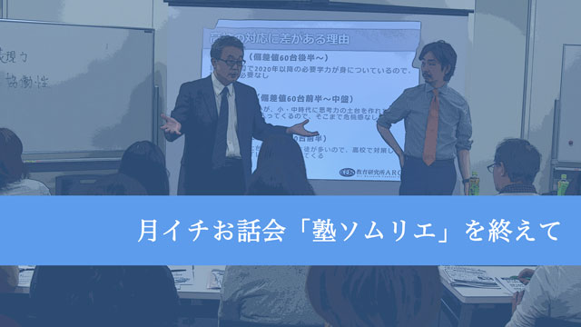

少し日にちが空いてしまいましたが、12月の月イチお話会「塾ソムリエ」について。
というのも、私事ですが、のど風邪を引いてしまい、体調絶不調だったのです。たいして熱もでないのに、のどが痛くなると何もできなくなる体質で、関係各所にご迷惑をおかけしました。一週間ほどでしっかり治って無事復活しました。
さて、塾ソムリエ
私自身、一八歳で塾講師のアルバイトを始めて以来、30代半ばまでこの業界に関わっています。メインは大学入試ですが、中学入試、高校入試も指導を一通り経験し、思うところも色々あるわけです。中でも最近強く感じるのは「保護者、生徒のニーズ」と「塾の提供するもの」の不一致です。一見すべてが同じように感じる「塾」ですが、中身は千差万別です。規模の面でも「大手集団指導」「中規模集団指導」「小規模集団指導」ではサービスの方向性が違いますし、集団指導と個別指導でも異なります。この差はあくまでも「方向性」であり、「質」ではありません。質は同じ塾でも教室によって、同じ教室でも担当の先生によって違いますから、正直なところ「巡り合わせ」によるものの方が大きいでしょう。つまり、入塾させてみなければ分からないのです。
では「方向性」とはなにか。受験重視、学校の成績重視という目的の違いから、理解力重視、知識量重視という授業法の違いまで、何もかもが違います。ウェブサイトやチラシを見ているとどこの塾も「Aもできます。Bもできます」とオールマイティをうたっていますが、実際には力のいれどころが違うのです。
このような方向性が保護者・生徒と塾でズレてしまうと、その結末は悲惨です。保護者生徒は十分なサービスがもらえないことに不満を持ちますし、塾は最も得意なフィールドで勝負できないことに切歯扼腕でしょう。もちろんバラ色の未来をうたう塾側が悪いと言えば悪いのでしょうが、それをなじったところで、損をするのは生徒です。
塾の第一線を退いた今だからこそ、保護者・生徒の皆さんに「外からは見えない“業界の内幕”」を伝え、お助けしたい。そんな気持ちで始めた会でした。
おかげさまで、第一回は来ていただいたお客様にご満足いただけたことと思います。また近いうちによりパワーアップした第二回を行えたらと思いますので、お暇がありましたら、今後是非ご参加くださいね！